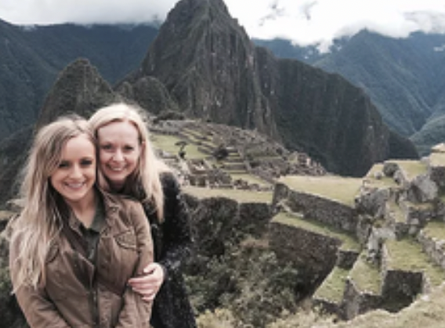
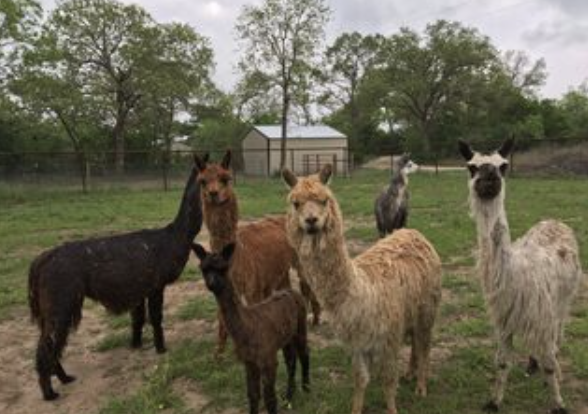

04 — Pet Projects
The side quests.
Not every project starts with a Fortune 500 budget. Some start closer to home — with a family business, a real audience, and the same question I ask everywhere: how do we make people care?


Family Alpaca Farm · Paid Media Initiative
Turning a family farm into a local discovery story.
Ran a paid media initiative for my family's alpaca farm, translating a charming offline experience into a digital campaign designed to drive awareness, interest, and local visits.
The work blended practical audience targeting with the emotional side of the brand: the animals, the setting, the family story, and the simple joy of discovering something unexpected nearby.